PROJECT LIST
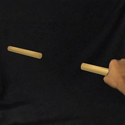
Perceived Weight of Mediated Reality Sticks
IEEE TVCG (2025) (Early Access)
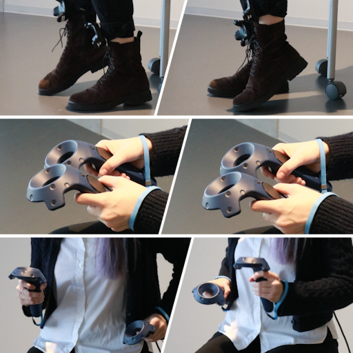
Not All WIP Are Perceived Equally: Different Speed Expectations in Seated Walk-in-Place Locomotion
ACM VRST 2025 (To Appear)
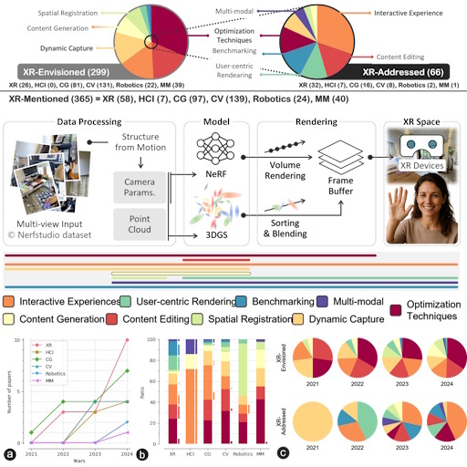
Radiance Fields in XR: A Survey on How Radiance Fields are Envisioned and Addressed for XR Research
IEEE TVCG (2025), IEEE ISMAR 2025 (To Appear)
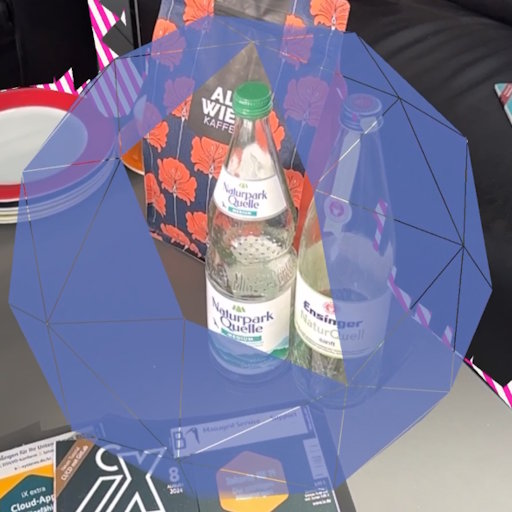
IntelliCap: Intelligent Guidance for Consistent View Sampling
IEEE ISMAR 2025 (To Appear)
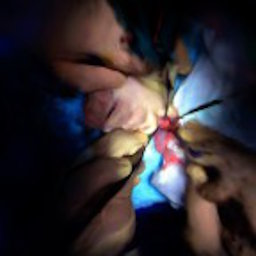
Occlusion-free 4D Gaussians for Open Surgery Videos Using Multi-Camera Shadowless Lamps
MICCAI 2025 (To Appear)
🎖️ Spotlight Presentation
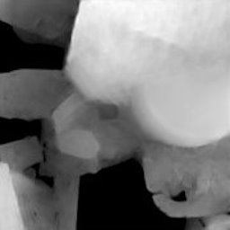
Dense Depth from Event Focal Stack
IEEE/CVF WACV 2025
Neural Bokeh: Learning Lens Blur for Computational Videography and Out-of-Focus Mixed Reality
IEEE VR 2024
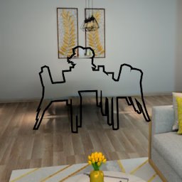
DeepDR: Deep Structure-Aware RGB-D Inpainting for Diminished Reality
3DV 2024
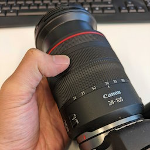
Toward Multi-Plane Image Reconstruction from a Casually Captured Focal Stack
VISAPP 2024
🎖️ Selected High Quality Paper
🏆 SIG-MR Award
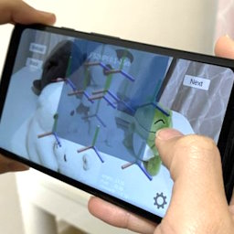
Multi-layer Scene Representation from Composed Focal Stacks
IEEE TVCG (2023), IEEE ISMAR 2023
🏆 Best Journal Paper Award
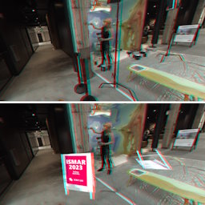
Exemplar-Based Inpainting for 6DOF Virtual Reality Photos
IEEE TVCG (2023), IEEE ISMAR 2023
🏆 Best Journal Paper Award Nominee
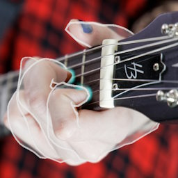
guitARhero: Interactive Augmented Reality Guitar Tutorials
IEEE TVCG (2023), IEEE ISMAR 2023
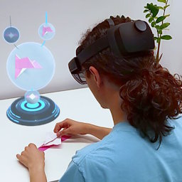
State-Aware Configuration Detection for Augmented Reality Step-by-Step Tutorials
IEEE ISMAR 2023
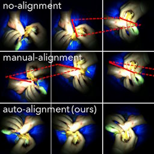
High-Quality Virtual Single-Viewpoint Surgical Video: Geometric Autocalibration of Multiple Cameras in Surgical Lights
MICCAI 2023
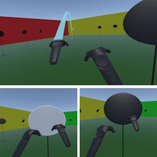
Point & Teleport with Orientation Specification, Revisited: Is Natural Turning Always Superior?
JIP (2023)
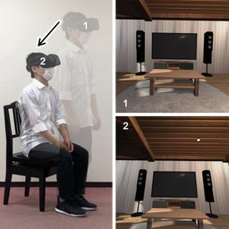
Modified Egocentric Viewpoint for Softer Seated Experience in Virtual Reality
IEEE TVCG (2023), IEEE VR 2023

Good Keyframes to Inpaint
IEEE TVCG (2022)
🎖️ Invited TVCG paper at IEEE ISMAR 2022
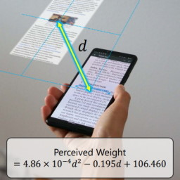

Exploring Pseudo-Weight in Augmented Reality Extended Displays
IEEE VR 2022
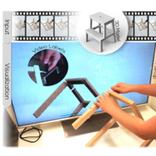
Video-Annotated Augmented Reality Assembly Tutorials
ACM UIST 2020
Mixed Reality Light Fields for Interactive Remote Assistance
ACM CHI 2020
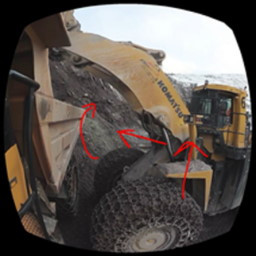
Tools for Teaching Mining Students in Virtual Reality based on 360° Video Experiences
IEEE VR Workshop KELVAR 2020
🏆 Best Paper Award
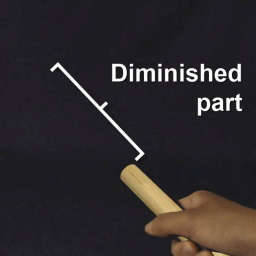
Perceived Weight of a Rod under Augmented and Diminished Reality Visual Effects
ACM VRST 2018
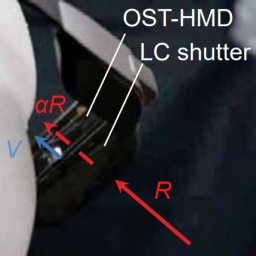
BrightView: Increasing Perceived Brightness of Optical See-Through Head-Mounted Displays Through Unnoticeable Incident Light Reduction
IEEE VR 2018
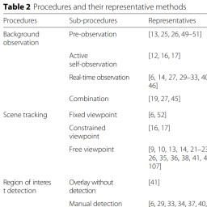
A Survey of Diminished Reality: Techniques for Visually Concealing, Eliminating, and Seeing Through Real Objects
IPSJ CVA (2017)
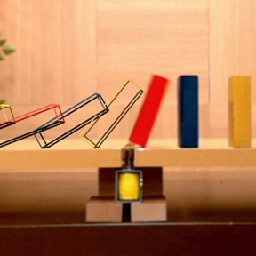
DOMINO (Do Mixed-reality Non-stop) Toppling
IEEE ISMAR 2015
🏆 Best Demo Award
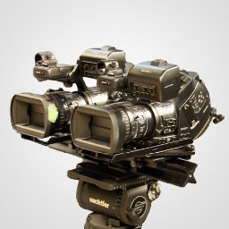
Enabling On-set Stereoscopic MR-based Previsualization for 3D Filmmaking
ACM SIGGRAPH Asia 2011